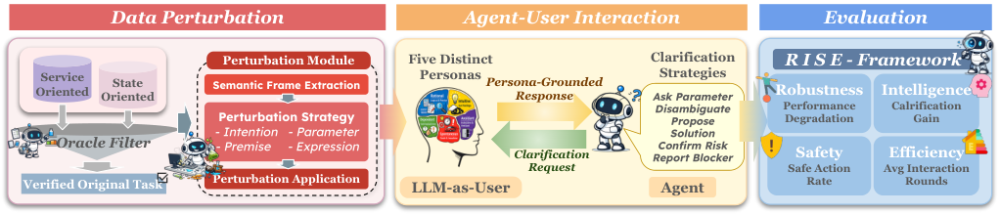
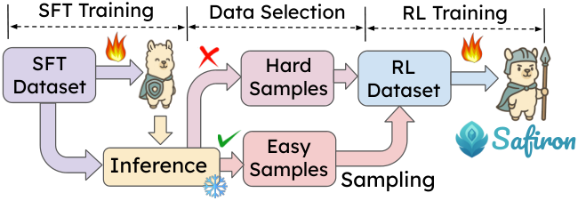

Language Technologies Institute, School of Computer Science. Coursework: Deep Learning Systems, Advanced NLP, Intro to QA with LLMs.
Xi'an, China. First-Class Scholarship.
Research experience
Research assistant at the Language Technologies Institute, on tacit knowledge gaps between LLM agents and human experts. See the project ↓
Research assistant on Safiron, a guardrail for agent plans, in collaboration with IBM. Published at ICLR 2026. See the paper ↓
Research assistant on Drift-Bench, a multi-turn benchmark for agents under input faults. Published at ICML 2026. See the paper ↓
Selected research
tacit = known, but never written down
Ongoing · 2026–
Tacit knowledge for LLM agents
With Prof. Sherry Tongshuang Wu, CMU · in collaboration with Bosch
Discovering and extracting the unwritten judgment experts apply at critical decision points, so that LLM agents can use it.
Project
Understanding tacit knowledge gaps between LLM agents and human experts
What
Tacit knowledge is the unwritten judgment experts apply at critical decision points. With Bosch, we discover and extract this knowledge so that LLM agents can use it, and we investigate whether its absence is what drives agent failures on complex tasks.
My role
I explore Meta Kaggle Code and InsightBench to reconstruct human problem-solving workflows and identify the decision points relevant to LLM agent failures.
Han Bao, Zheyuan Zhang, Pengcheng Jing, Zhengqing Yuan, Kaiwen Shi, Yanfang Ye
A multi-turn benchmark for agents that receive flawed instructions. With clarification disabled, 7 LLM agents dropped about 45% on OS/DB tasks and 21% on API tasks relative to fault-free instructions.
Drift-Bench: Diagnosing Cooperative Breakdowns in LLM Agents under Input Faults via Multi-Turn Interaction
My role
Co-developed the benchmark across white-box OS and database environments (AgentBench) and black-box API environments (StableToolBench), injecting 4 types of input faults into tasks verified as solvable. Designed 5 simulated user personas with distinct communication and decision-making styles, plus 5 clarification actions for incomplete, ambiguous, or risky instructions.
Finding
Clarification partly restored OS/DB task success but reduced API reliability, possibly by disrupting tool-call formatting and causing premature abandonment after recoverable API errors.
When
Sep 2025 – Feb 2026 · Research assistant with Prof. Yanfang (Fanny) Ye, University of Notre Dame

Pipeline overview, Figure 2 of the paper (CC BY 4.0).
@inproceedings{pmlr-v306-bao26e,
title = {{DRIFT}-{BENCH}: Diagnosing {C}oope{R}ative Breakdowns in {LLM} Agents under Input Faults via Multi-Turn Interaction},
author = {Bao, Han and Zhang, Zheyuan and Jing, Pengcheng and Yuan, Zhengqing and Shi, Kaiwen and Ye, Yanfang},
booktitle = {Proceedings of the 43rd International Conference on Machine Learning},
series = {Proceedings of Machine Learning Research},
volume = {306},
pages = {6492--6559},
publisher = {PMLR},
year = {2026},
url = {https://proceedings.mlr.press/v306/bao26e.html}
}
An 8B-parameter guardrail, built with IBM, that flags risky agent plans, classifies the risk, and explains why before execution. 94.9% binary accuracy, ahead of all 12 general-purpose LLM baselines.
Built the AuraGen-based synthetic-data pipeline, distilling DeepSeek-R1-generated quality annotations into a Ministral-based scorer whose scores fed an SVM filter to select training samples. Trained Safiron with supervised fine-tuning followed by GRPO, using a mix of samples the fine-tuned model classified correctly and incorrectly to stabilize reinforcement learning.
Result
94.9% binary classification accuracy and 64.6% risk-category accuracy on Pre-Exec Bench, outperforming all 12 general-purpose LLM baselines evaluated.
When
Jul 2025 – Sep 2025 · Research assistant with Prof. Xiangliang Zhang, University of Notre Dame · with IBM

Training pipeline, Figure 3 of the paper (CC BY-NC-SA 4.0).
@inproceedings{huang2026building,
title = {Building a Foundational Guardrail for General Agentic Systems via Synthetic Data},
author = {Huang, Yue and Hua, Hang and Zhou, Yujun and Jing, Pengcheng and Nagireddy, Manish and Padhi, Inkit and Dolcetti, Greta and Xu, Zhangchen and Chaudhury, Subhajit and Rawat, Ambrish and Nedoshivina, Liubov and Chen, Pin-Yu and Sattigeri, Prasanna and Zhang, Xiangliang},
booktitle = {International Conference on Learning Representations},
year = {2026},
url = {https://arxiv.org/abs/2510.09781}
}
Skills
Machine learning
, , , ,
Frameworks
PyTorch, Hugging Face Transformers, vLLM, scikit-learn